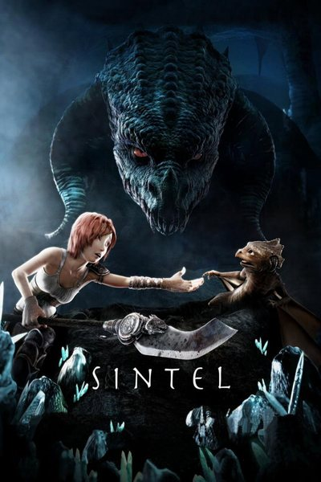
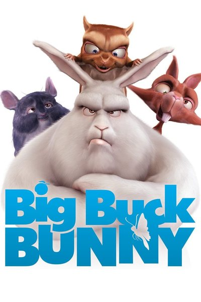
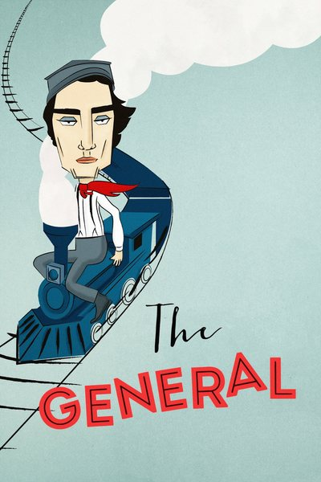
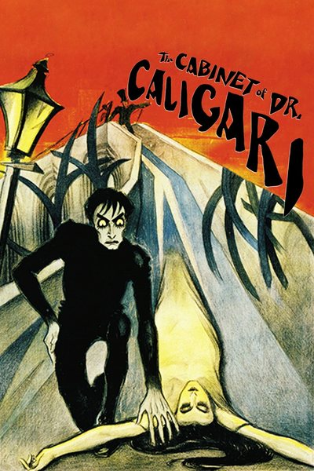
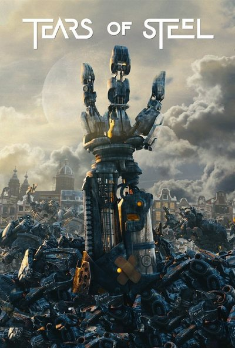

Social
Nick







Still the best thing the Blender people made. The dragon reveal lands every time and the ending is quietly brutal. Fifteen minutes and it does more than most features.
A Hitchcock film Hitchcock never made. Grant and Hepburn carry the whole thing on charm and the Paris of it is a holiday.
Couldn't get past the pacing. Historically important, I know, but I was checking the clock by the half hour.
The train chase is the whole film and it's enough. Keaton does stunts nobody would be allowed to do now.
Rough around the edges but the live-action and CG blend holds up better than most studio work from that year.
Your view of Nick
Only you see these. They change nothing for Nick or anyone else.
What you call them. Blank shows the name they publish.
Their published picture in every tile; off shows the letter.
The hue their tile and marks are drawn in.
Keeps their activity off the Feed, titles and the Friends grid.